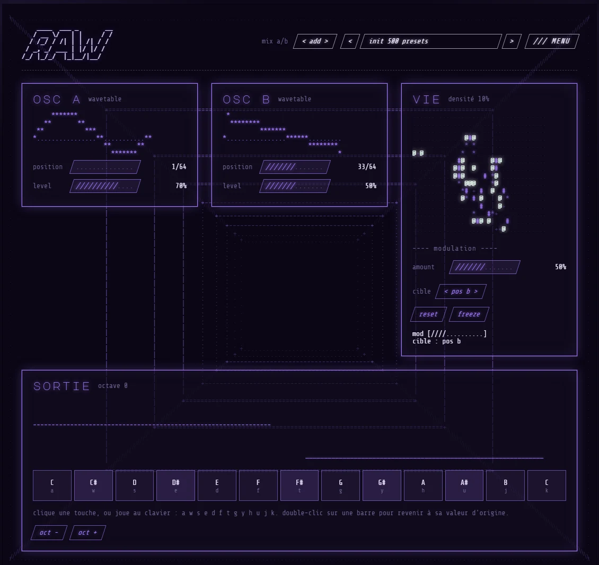

abrasion · synthé · v1
RAW
Un synthé à deux oscillateurs wavetable, un petit automate cellulaire qui module le son, et une interface en ASCII qui prend vie quand tu joues.
- oscillateurs2 wavetable
- modulationautomate VIE
- formatVST3
Prix à venir
Voir l’interface
01 /
L’interface
Tout tient sur un écran. Clique sur les carrés pour lire ce que fait chaque zone.

02 /
Ce que fait RAW
Deux oscillateurs wavetable
Chaque oscillateur lit une table de 64 formes. Fais glisser la position pour passer d’un son rond à un son mordant.
Un automate qui module
Des cellules vivent et meurent sur une petite grille. Leur densité pilote un réglage : le son ne joue jamais deux fois pareil.
Une interface vivante
Formes d’onde, barres et grille sont dessinées en caractères. Tout bouge avec le son, tu vois ce que tu entends.
Un clavier intégré
Joue directement dans le plugin, à la souris ou au clavier de l’ordinateur, avec oct - et oct + pour changer d’octave.
Comparer deux réglages
mix a/b garde deux versions de ton son pour les écouter l’une après l’autre et choisir la meilleure.
Retour à zéro
Un double-clic sur une barre la ramène à sa valeur d’origine. Pratique quand on s’est perdu.
03 /
Fiche technique
- Type
- Synthé (instrument)
- Format
- VST3
- Système
- Windows 10 ou 11, 64 bits
- Logiciel hôte
- Tout logiciel compatible VST3 (FL Studio, Ableton Live, Reaper, Bitwig…)
- Oscillateurs
- 2 wavetable, 64 positions
- Modulation
- Automate VIE : densité, quantité, cible
- Licence
- Personnelle, sur deux ordinateurs
- Activation
- Clé de licence ou compte, fonctionne hors ligne
++
[ RAW ]
Installation et activation tout de suite dans ONIRIQUE CENTRAL, licence pour toi sur deux ordinateurs, mises à jour de la v1 incluses.
Prix à venir
04 /
Questions
Comment installer RAW ?
Copie le fichier RAW.vst3 dans C:\Program Files\Common Files\VST3, puis relance la recherche de plugins dans ton logiciel. RAW apparaît dans la liste des instruments.
Sur combien d’ordinateurs puis-je l’utiliser ?
Une licence s’active sur deux ordinateurs à toi. Tu peux en désactiver un depuis ONIRIQUE CENTRAL, pour en activer un autre.
Faut-il internet pour jouer ?
Seulement pour l’activation. Ensuite RAW fonctionne hors ligne et renouvelle sa licence tout seul quand une connexion est disponible.
Puis-je être remboursé ?
Comme pour tout contenu numérique téléchargé immédiatement, le droit de rétractation ne s’applique plus une fois le téléchargement commencé, avec ton accord exprès au moment de l’achat. Si le plugin ne fonctionne pas comme décrit, la garantie légale de conformité s’applique : écris-nous. Tout est détaillé dans les conditions générales de vente.
Quelle différence avec RAW 2 ?
RAW est le premier synthé d’abrasion : simple et direct. RAW 2, dans abrasion labs, va beaucoup plus loin : instruments réels, matrice de modulation, 12 effets, arpège, accords et mix assisté par IA.